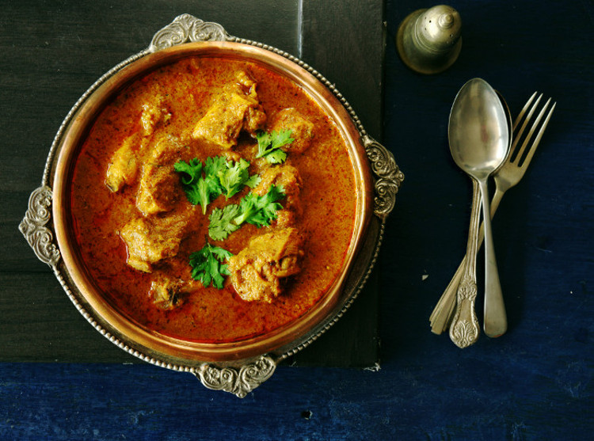

Butter Chicken Recipe

A delicious bowl of garnished butter chicken.
Ingredients
Marinade
- 1/2 cup plain yogurt
- 1 tbsp lemon juice
- 1 tsp tumeric powder
- 2 tsp garam masala
- 1/2 tsp chilli powder or cayenne pepper powder
- 1 tsp ground cumin
- 1 tbsp ginger, freshly grated
- 2 cloves garlic, crushed
- 1.5 lb / 750 g chicken thigh fillets, cut into bite size pieces
Curry
- 2 tbsp (30 g) ghee or butter
- 1 cup tomato passata (aka tomato puree)
- 1 cup heavy / thickened cream
- 1 tbsp sugar
- 1 1/4 tsp salt
- Coriander/Cilantro (optional)
Steps
- Comnbine the marinade ingredients with the chicken in a bowl. Cover and refrigerate overnight or up to 24 hours.
- Heat the ghee/butter over high heat in a large fry pan. Take the chicken out of the marinade but do not wipe or shake off the marinade from the chicken (do not pour the remaining marinade in the bow into the fry pan.)
- Place chicken in the fry pan and cook for around 3 minutes or until the chicken is white all over
- Add the tomato passata, cream, sugar and salt. Also add any remaining marinade left in the bowl. Turn down to low and simmer for 20 minutes. Do a taste test to see if it needs more salt.
- Garnish with coriander/cilantro leaves if using.
Home